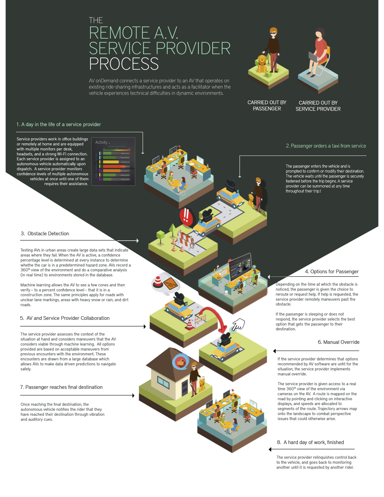

Design for San Diego's 2017 Civic Challenge
How do we create a San Diego where we all move freely? We all have places to go and people to see. Whether for work or play—and by car, bike, train, bus, boat, or foot—mobility significantly affects millions on a daily basis. San Diego is culturally and economically diverse, as well as spread out, which makes getting around the city an important issue to explore.
AV onDemand
Project Brief
In a one month long design competition, I worked within a team of 5 to research, design, and prototype a novel solution that tackled the challenge of mobility in San Diego – dealing in topics such as accessibility, commuter experience, and the rise of autonomous vehicles.
We took a human-centered design approach to prototype a semi-autonomous remote service provider system which aimed to accomodate riders with disabilities.
We ended up placing as top 3 finalists out of 23 teams.
Preparing for Autonomous Vehicles

Autonomous vehicles (also known as AV) are arriving sooner than anticipated. Within the next decade, level 3-4 AVs will roam the streets. While society is preparing for this major advance in transportation, there are still many areas of concern that the AV industry must take into consideration during this speedy transition period, particularly dealing with how to accomodate for riders with disabilities.
The Problems:
- 1 in 7 people in the US (~57 million) have a disability, and for a large subset of the disabled community, transportation remains inaccessible and unreliable for their needs.
- AV legislation is being discussed, but not so much as for how AVs can accommodate riders with disabilities.
- For a long time, AVs will still expect some level of rider takeover while navigating through areas of unknown conditions (e.g., construction zones, dirt roads), thus rendering AVs inaccessible for riders with disabilities.
The Solution:
Staying in the loop, so you don't have to.
To summarize, AV onDemand is a model in which remote service providers monitor AVs and handle all takeover responsibilities for when a specific AV doesn't know what to do.
- Enhanced mobility for riders with disabilities! By eliminating rider responsibility, AV onDemand allows a wider range of riders, including those with visual, cognitive, or physical impairments, to travel freely on their own.
- Enhanced rider freedom and productivity! AV onDemand's service extends to all riders who want to take their hands off the wheel. Increased productivity levels while commuting is a result of reduced responsibility.
- New employment opportunities! AV onDemand creates a new job market for professional drivers who would be displaced by AVs. Individuals with disabilities who demonstrate the capacity to perform service provider duties may also be employed.
- Implementation of existing technology! The technology needed to implement AV onDemand already exists. It is also expected that broadband strength will improve over the next 3-5 years when level 4 autonomous vehicles are projected to be on the road, eliminating latency issues between autonomous vehicles and remote operators.
Below is a video prototype further demonstrating how a service provider and a rider work together to ensure a smooth commuting experience.
Rider UI

Service Provider UI

Design Process